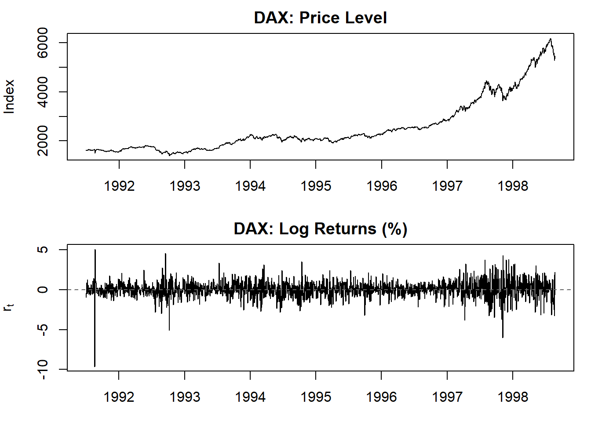
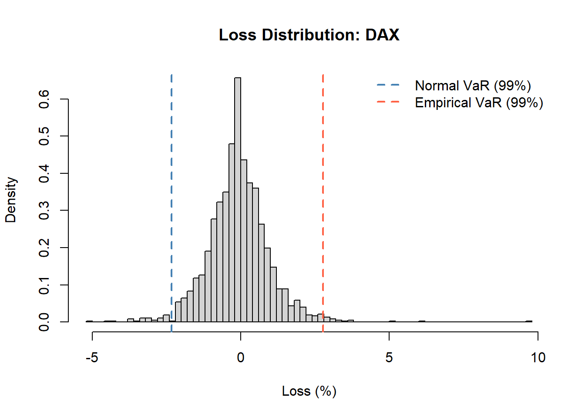
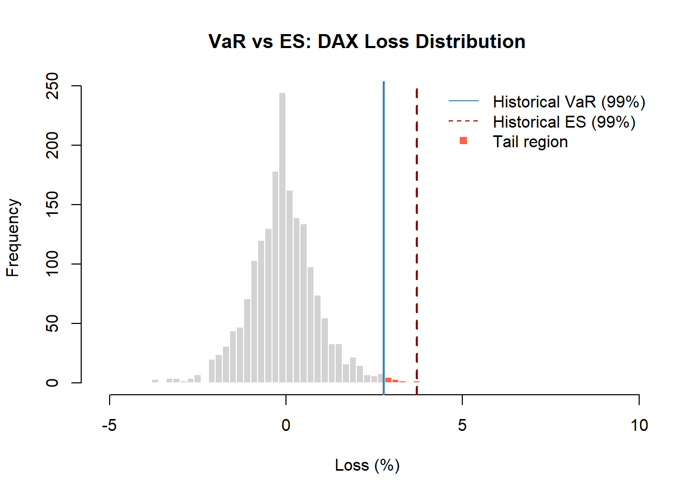
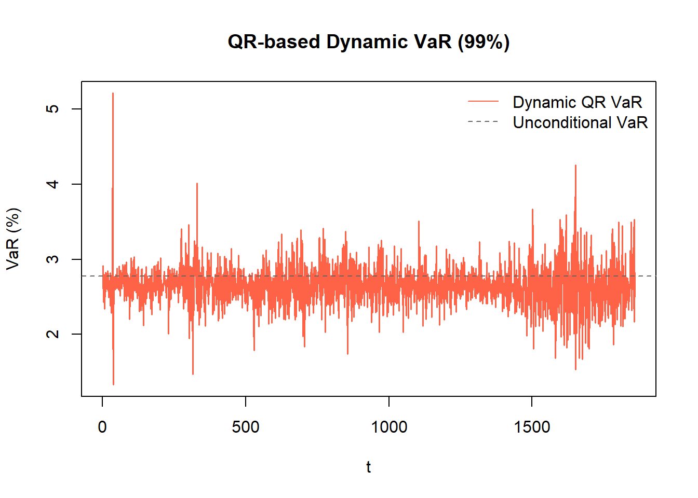

Market Risk
VaR, Expected Shortfall, and quantile regression
Financial Risk
The Basel Accord classifies financial risk into three broad categories:
- Credit risk: risk of counterparty default
- Market risk: risk from changes in stock prices, interest rates, FX, and commodity prices
- Operational risk: legal, political, and process risks
We focus on market risk: data are high quality, the concepts are well-understood, and the ideas transfer to other risk types.
Risk measure: a summary statistic of the loss distribution \(L_t(l)\), where \(L_t(l)\) is the loss of a financial position over holding period \(l\) starting at \(t\). All risk measures are functions of this distribution.
Returns
The standard transformation for financial prices \(P_t\) is the log return:
\[r_t = 100(1 - B)\log(P_t) = 100\log\left(\frac{P_t}{P_{t-1}}\right) \approx \frac{P_t - P_{t-1}}{P_{t-1}} \times 100\]
Log returns are approximately normally distributed for short horizons, additive over time, and stationary. The loss variable is \(L_t = -r_t\) (losses are positive).
Value at Risk (VaR)
Value at Risk at confidence level \(1-p\): the minimum loss that is exceeded with probability \(p\) over holding period \(l\).
Let \(F_l(x)\) be the CDF of \(L_t(l)\):
\[VaR_{1-p} = \inf\{x \mid F_l(x) \geq 1-p\} \implies P(L_t(l) \leq VaR_{1-p}) \geq 1-p\]
Typical parameters: - Tail probability \(p\): 0.01 for risk management, 0.001 for stress testing - Holding period \(l\): 1 day or 10 days for market risk; 1 year for credit risk
So \(VaR_{0.99}\) is the loss threshold you expect to exceed only 1% of the time.
VaR under Distributional Assumptions
Normal: if \(L_t \sim N(\mu_t, \sigma_t^2)\):
\[VaR_{1-p} = \mu_t + z_{1-p} \sigma_t\]
where \(z_{1-p}\) is the \((1-p)\)-th quantile of \(N(0,1)\).
Student-t: if \(Y_t = (L_t - \mu_t)/\sigma_t\) is Student-t with \(\nu\) degrees of freedom:
\[VaR_{1-p} = \mu_t + t_{\nu, 1-p} \sigma_t\]
# empirical distribution of DAX returns
r_vec <- as.numeric(r_dax)
mu <- mean(r_vec)
sig <- sd(r_vec)
# 99% VaR under normality (loss = -return, so use left tail of return)
p <- 0.01
var_norm <- mu - qnorm(1 - p) * sig # VaR on the loss scale
var_emp <- quantile(-r_vec, 1 - p) # empirical VaR
cat("Normal VaR (99%):", round(var_norm, 4), "\n")Normal VaR (99%): -2.3311 cat("Empirical VaR (99%):", round(var_emp, 4), "\n")Empirical VaR (99%): 2.7753 
Multi-Period VaR
VaR is typically computed at a 1-day horizon and scaled to longer horizons using the square-root-of-time rule. If returns are iid with variance \(\sigma^2\), the \(h\)-day loss has variance \(h\sigma^2\), so:
\[VaR_{1-p}^{(h)} = VaR_{1-p}^{(1)} \times \sqrt{h}\]
For example, the Basel Accord requires a 10-day VaR, obtained from the 1-day VaR by multiplying by \(\sqrt{10} \approx 3.16\).
The square-root rule is exact only under the iid assumption. With volatility clustering (GARCH effects), it overstates the 10-day VaR when current volatility is below the long-run level and understates it when volatility is elevated. In practice, GARCH multi-step forecasts are preferred for accurate scaling.
Approaches to VaR Estimation
Three methods are used in practice:
1. Parametric (analytical): assume \(L_t \sim F(\mu_t, \sigma_t^2)\) (Normal or Student-t), estimate the parameters, and plug into the closed-form \(VaR_{1-p} = \mu_t + q_p \sigma_t\). Fast, but relies heavily on the distributional assumption. Normal VaR systematically understates tail risk when returns are fat-tailed.
2. Historical simulation: use the empirical distribution of the past \(T\) returns directly. Sort the observed losses and take the \((1-p) \times T\) order statistic as VaR. No distributional assumption needed, but assumes the past distribution is representative of the future. Does not adapt to changes in current volatility.
3. Filtered historical simulation (GARCH): fit a GARCH model to standardize returns \(\hat{\epsilon}_t = r_t / \hat{\sigma}_t\), then apply historical simulation to the standardized residuals, and scale back by the forecast \(\hat{\sigma}_{T+1}\). Combines the flexibility of historical simulation with the adaptivity of GARCH.
loss <- -r_vec
# historical simulation: p-th quantile of empirical loss distribution
var_hs <- quantile(loss, 1 - p)
es_hs <- mean(loss[loss > var_hs])
cat("Historical VaR (99%):", round(var_hs, 4), "\n")Historical VaR (99%): 2.7753 cat("Historical ES (99%):", round(es_hs, 4), "\n")Historical ES (99%): 3.7036 cat("Normal VaR (99%):", round(var_norm, 4), "\n")Normal VaR (99%): -2.3311 cat("Ratio (HS/Normal): ", round(var_hs / var_norm, 3), "\n")Ratio (HS/Normal): -1.191 Historical simulation VaR is higher than Normal VaR for DAX returns because the empirical distribution has fatter tails than the normal assumption allows.
VaR Limitations
- Tail blindness: VaR says nothing about how severe losses are beyond the threshold. A portfolio with a 1% chance of a 5% loss and one with a 1% chance of a 50% loss have the same VaR.
- Not subadditive in general: for non-normal distributions, it is possible that \(VaR(X + Y) > VaR(X) + VaR(Y)\). Diversification can appear to increase VaR, which contradicts economic intuition. VaR only satisfies subadditivity when losses are jointly elliptically distributed (e.g., multivariate normal).
- Threshold only: a position with many losses just below VaR is treated the same as one with no such losses.
Expected Shortfall (ES)
Expected Shortfall (also called Tail VaR or Conditional VaR, CVaR): the expected loss given that the loss exceeds VaR:
\[ES_{1-p} = E(L_t \mid L_t > VaR_{1-p}) = \frac{\int_{VaR}^{\infty} x f(x) \, dx}{P(L_t > VaR_{1-p})} = \frac{1}{p}\int_{1-p}^{1} VaR_u \, du\]
The second representation makes clear that ES is a weighted average of all VaRs in the tail, from level \(1-p\) up to 1. ES always satisfies \(ES_{1-p} \geq VaR_{1-p}\): it is the average of all losses beyond the VaR threshold, so it must be at least as large.
Coherence
A risk measure is coherent (Artzner et al., 1999) if it satisfies four axioms: monotonicity, translation invariance, positive homogeneity, and subadditivity. ES satisfies all four. VaR satisfies the first three but fails subadditivity for non-elliptical distributions (as shown in the limitations above).
The practical consequence: ES correctly penalizes concentration of tail risk. If two positions each have VaR of 10, ES recognizes that combining them may still produce extreme tail losses, whereas VaR naively implies the combined position has VaR \(\leq 20\). ES makes diversification credit accurate.
Because of this, the Basel III/IV framework shifted from VaR to ES (at the 97.5% level) as the primary regulatory risk measure for market risk capital requirements.

Closed-Form Solutions
Normal: \(ES_{1-p} = \mu_t + \frac{f(z_{1-p})}{p} \sigma_t\) where \(f\) is the \(N(0,1)\) pdf.
Student-t with \(\nu\) df: \(ES_{1-p} = \mu_t + \sigma_t \frac{f_\nu(t_{\nu,1-p})}{p} \cdot \frac{\nu + t_{\nu,1-p}^2}{\nu - 1}\)
Normal ES (99%): 2.8106 Empirical ES (99%): 3.7036 Dynamic VaR via GARCH
Historical simulation and parametric VaR treat the loss distribution as static. In reality, the conditional distribution of returns is time-varying: volatility clusters. GARCH gives a way to obtain a time-adaptive VaR.
The GARCH-based VaR at time \(T+1\) is:
\[VaR_{T+1,\, 1-p} = -\hat{\mu}_{T+1|T} - q_p^{(\text{innov})} \cdot \hat{\sigma}_{T+1|T}\]
where \(q_p^{(\text{innov})}\) is the \(p\)-th quantile of the innovation distribution (e.g., \(q_p = \Phi^{-1}(p)\) for Normal, or \(t_{\nu,p}\) for Student-t). The negative sign converts from the return scale to the loss scale.
Procedure:
- Fit GARCH(1,1) to returns with
rugarch::ugarchspec()+ugarchfit() - Obtain 1-step-ahead \(\hat{\mu}_{T+1|T}\) and \(\hat{\sigma}_{T+1|T}\) via
ugarchforecast() - Apply the quantile of the fitted innovation distribution to get VaR
spec_rv <- ugarchspec(
variance.model = list(model = "sGARCH", garchOrder = c(1, 1)),
mean.model = list(armaOrder = c(1, 0), include.mean = TRUE),
distribution.model = "std" # Student-t innovations for heavy tails
)
fit_rv <- ugarchfit(spec_rv, data = r_vec)
# 1-step-ahead conditional mean and volatility
fc_rv <- ugarchforecast(fit_rv, n.ahead = 1)
mu_fc <- fitted(fc_rv)[1]
sig_fc <- sigma(fc_rv)[1]
nu_hat <- coef(fit_rv)["shape"] # estimated degrees of freedom
# VaR: negative of the p-th quantile of the conditional distribution
var_garch <- -(mu_fc + qt(p, df = nu_hat) * sig_fc)
cat("GARCH-t VaR (99%, 1-step):", round(var_garch, 4), "\n")GARCH-t VaR (99%, 1-step): 5.107 cat("Conditional sigma (%):", round(sig_fc, 4), "\n")Conditional sigma (%): 1.6265 cat("Estimated df (nu):", round(nu_hat, 2), "\n")Estimated df (nu): 5.93 The GARCH VaR adjusts dynamically: on calm days, \(\hat{\sigma}_{T+1}\) is low and VaR is modest; after a market shock, \(\hat{\sigma}_{T+1}\) is elevated and VaR rises immediately. This is the key advantage over historical simulation, which updates slowly as old extreme returns enter or leave the rolling window.
Quantile Regression for VaR
Rather than imposing a distributional assumption, quantile regression (Koenker and Bassett, 1978) directly estimates the \(p\)-th conditional quantile of returns as a linear function of predictors:
\[Q_p(r_t \mid \mathcal{I}_{t-1}) = \beta_0^p + \beta_1^p X_{t-1}^{(1)} + \cdots + \beta_k^p X_{t-1}^{(k)}\]
The VaR at time \(t\) is then \(VaR_{t,\,1-p} = -Q_p(r_t \mid \mathcal{I}_{t-1})\). Each quantile level \(p\) has its own coefficient vector \(\beta^p\).
Estimation
The \(p\)-th quantile is the value that minimizes expected asymmetric absolute loss. The estimator solves:
\[\hat{\beta}^p = \arg\min_\beta \frac{1}{T} \sum_{t=1}^T \rho_p\!\left(r_t - \mathbf{x}_{t-1}^\top \beta^p\right)\]
where \(\rho_p(e) = e\,(p - \mathbb{1}_{\{e < 0\}})\) is the check function (tick loss). For \(e > 0\) (under-prediction), the penalty is \(p \cdot e\). For \(e < 0\) (over-prediction), the penalty is \((1-p)|e|\). At \(p = 0.01\), under-predicting loss is penalized only 1/99 as heavily as over-predicting: the estimator is pulled toward capturing the left tail.
The first-order condition is \(\mathbb{E}[\rho_p'(e)] = \mathbb{E}[p - \mathbb{1}_{\{e < 0\}}] = 0\), which gives \(P(e < 0) = p\), confirming that the minimizer is the \(p\)-th quantile. Solved as a linear programming problem; quantreg::rq(formula, tau = p) handles this.
n_obs <- length(r_vec) - 1
r_y <- r_vec[2:(n_obs + 1)] # r_t
r_x <- r_vec[1:n_obs] # r_{t-1}
# quantile regression at p = 0.01 (1% tail of the return distribution)
qr_fit <- rq(r_y ~ r_x, tau = 0.01)
summary(qr_fit)
Call: rq(formula = r_y ~ r_x, tau = 0.01)
tau: [1] 0.01
Coefficients:
Value Std. Error t value Pr(>|t|)
(Intercept) -2.67102 0.17287 -15.45100 0.00000
r_x 0.26420 0.12601 2.09674 0.03615
Quantile regression is fully distribution-free and adapts to any conditional predictors. The model can include lagged returns, lagged squared returns (\(r_{t-1}^2\) as a proxy for volatility), or any risk factors. An extension called CAViaR (Conditional Autoregressive VaR, Engle and Manganelli 2004) treats the quantile itself as a latent autoregressive process:
\[Q_{p,t} = \beta_0 + \beta_1 Q_{p,t-1} + \beta_2 |r_{t-1}|\]
mimicking the persistence of GARCH volatility in the VaR directly, without requiring a full distributional model.
Appendix: Key Functions
quantile() and mean(): Empirical VaR and ES
Historical simulation requires only base R.
loss <- -r_vec
p <- 0.01
var_hs_app <- quantile(loss, 1 - p)
es_hs_app <- mean(loss[loss > var_hs_app])
cat("VaR (99%, historical):", round(var_hs_app, 4), "\n")VaR (99%, historical): 2.7753 cat("ES (99%, historical):", round(es_hs_app, 4), "\n")ES (99%, historical): 3.7036 cat("ES > VaR?", es_hs_app > var_hs_app, "\n")ES > VaR? TRUE ugarchforecast(): Extracting GARCH-based VaR
# fit is already in environment from {r garch-var}
fc <- ugarchforecast(fit_rv, n.ahead = 1)
mu_1 <- fitted(fc)[1]
sig_1 <- sigma(fc)[1]
nu_fit <- coef(fit_rv)["shape"]
# Normal VaR vs Student-t VaR
var_norm_g <- -(mu_1 + qnorm(p) * sig_1)
var_t_g <- -(mu_1 + qt(p, df = nu_fit) * sig_1)
cat("GARCH Normal VaR (99%):", round(var_norm_g, 4), "\n")GARCH Normal VaR (99%): 3.7604 cat("GARCH-t VaR (99%):", round(var_t_g, 4), "\n")GARCH-t VaR (99%): 5.107 cat("Student-t is more conservative:", var_t_g > var_norm_g, "\n")Student-t is more conservative: TRUE rq(): Quantile Regression
quantreg::rq(formula, tau = p) fits quantile regression at level tau. Returns coefficients for the tau-th quantile; fitted() gives the in-sample conditional quantile estimates.
# multiple quantile levels at once
qr_multi <- rq(r_y ~ r_x, tau = c(0.01, 0.05, 0.10))
round(coef(qr_multi), 6) tau= 0.01 tau= 0.05 tau= 0.10
(Intercept) -2.671022 -1.623656 -1.098339
r_x 0.264201 0.145238 0.077587Each column is the coefficient vector for that quantile level. All three models share the same regressors but produce different conditional quantile estimates.